以前所讨论的是适用于一般矩阵计算的直接法,它们适合求解一般的稠密矩阵问题.本章将讨论特别适用于大规模稀疏矩阵特定问题求解的迭代法.
 概述
概述
以后所介绍的迭代法是基于把 维问题投影到低维Krylov子空间这一思想.给定矩阵
维问题投影到低维Krylov子空间这一思想.给定矩阵 和向量
和向量 ,相联系的Krylov序列是向量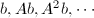的集合,相应的Krylov子空间是由这些向量顺次组成的集合张成的.
,相联系的Krylov序列是向量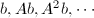的集合,相应的Krylov子空间是由这些向量顺次组成的集合张成的.
将要讨论的算法可如下表归类:
在每一问题中,投影到Krylov子空间的结果是把原来的矩阵问题约化到维数为的矩阵问题的序列.当是Hermite矩阵时,约化的矩阵是三对角矩阵.而在非Hermite矩阵情形下,有Hessenberg形式.例如,用Arnoldi方法逼近大矩阵的特征值,是用计算相继较大维数的某些Hessenberg矩阵的特征值完成的.
Arnoldi迭代
Arnoldi迭代是基于以下思想:用正交相似变换把完全约化到Hessenberg型可记作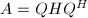,或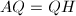.记
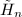为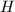的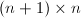阶子阵,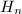为 阶顺序主子阵.考察等式的前列,得到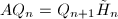,它的第列可以写为由此,为阶Krylov子空间,
阶顺序主子阵.考察等式的前列,得到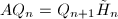,它的第列可以写为由此,为阶Krylov子空间, 为一组正交基.
为一组正交基.
由以上关系可以导出,即在上的投影在基上的表示.由此我们可以期望的一些特征值以有效形式与的一些特征值有关.称为的Arnoldi特征值估计或关于的Ritz值.
下面给出Arnoldi迭代的算法描述:
若迭代的第步有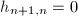,则迭代中断.但这是一种"良性"的中断,即此时的特征值都是的特征值.可随机选取正交向量使迭代进行下去.
实际分析表明,Arnoldi迭代往往给出的靠近谱边缘的特征值精确的逼近 (常以几何速度收敛),而这正是实际中感兴趣的情形.
最后指出,Arnoldi迭代同如下的多项式逼近问题之间的联系:
Arnoldi-Lanzcos逼近问题:求次首一多项式使得为极小值.
有如下定理,其证明可参见[1]:
GMRES
Arnoldi迭代也可用于求解方程组 ,其标准算法称为GMRES,是广义极小剩余 (Generalized Minimal Residuals)的简称.
,其标准算法称为GMRES,是广义极小剩余 (Generalized Minimal Residuals)的简称.
GMRES的思想如下:在迭代的第步,求使最小,则 的序列将逼近方程组的精确解.特别地,当迭代中止,即的维数小于时,将有,从而.
的序列将逼近方程组的精确解.特别地,当迭代中止,即的维数小于时,将有,从而.
由,存在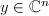使,从而问题化为求使最小.由Arnoldi迭代的过程可知,于是在GMRES的第步用标准方法 (对进行 分解),求得如上问题中的极小化向量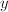,然后令.进一步分析指出,由于
分解),求得如上问题中的极小化向量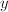,然后令.进一步分析指出,由于 的关系,不用对每一个矩阵独立构造因子分解,而可以用更新步骤从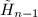的因子分解来得到的分解,只需要单个Givens旋转和
的关系,不用对每一个矩阵独立构造因子分解,而可以用更新步骤从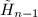的因子分解来得到的分解,只需要单个Givens旋转和 工作量.
工作量.
同样指出,GMRES同多项式逼近之间的联系:事实上,我们已经得到GMRES本质上是求常数项为1的不高于次的多项式,使为极小值.
Lanczos迭代
Lanczos迭代是限定在是Hermite矩阵情形下的Arnoldi迭代.由于矩阵的对称性,Arnoldi迭代中的Hessenberg矩阵将进而化为三对角矩阵 ,每步迭代的递推式也从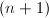项减少为
,每步迭代的递推式也从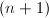项减少为 项,这使得Lanczos迭代所需的运算更少.
项,这使得Lanczos迭代所需的运算更少.
但舍入误差对Lanczos迭代有着重要的影响.正由于每步迭代仅对三个向量进行正交化,每步的舍入误差导致正交性的损失,从而算法的稳定性降低.实际计算中发现,经过多步迭代后会有所谓"重像 (Ghost)"特征值出现.这些迭代中出现的表观 (而非真实存在)的重特征值与的实际特征值的重数毫无关系,这些原因使得Lanczos迭代的实用性降低.
共轭梯度法 (CG)
现在假设不仅是实的和对称的,而且是正定的.在此假设下,由定义的函数是上的范数,称为-范数.共轭梯度迭代在第步产生唯一的达到极小这一性质的迭代序列的递推公式系统.
下面首先给出CG迭代步骤,之后证明它具有以上所述的极小性质.
由CG迭代的步骤易于归纳地证明该定理.由此,可以得到以下CG迭代的最优性质:
 的唯一点.收敛性是单调的:并且对某个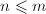,可以得到.
是中极小化的唯一点,考虑任意点,其误差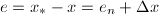.计算因,故从而这样就得到了的极小性与唯一性.迭代的单调性由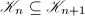容易得到.
□
的唯一点.收敛性是单调的:并且对某个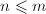,可以得到.
是中极小化的唯一点,考虑任意点,其误差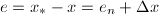.计算因,故从而这样就得到了的极小性与唯一性.迭代的单调性由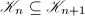容易得到.
□
事实上,以上也得到了CG与多项式逼近问题的联系:
求为常数项为 的不高于次的多项式,使得为极小值.
的不高于次的多项式,使得为极小值.
预处理
矩阵迭代的收敛性依赖于矩阵的性质:特征值,奇异值等.人们发现,在许多情况下,可以对感兴趣的问题加以转换使得矩阵的性质获得巨大的改进."预处理 (preconditioning)"这个过程,对于大多数迭代方法的成功应用是必不可少的.
有多种预处理器可以应用,如对角线缩放式,不完全Cholesky分解等,可以参考[1].
参考文献
[1]数值线性代数, 人民邮电出版社, 2006.